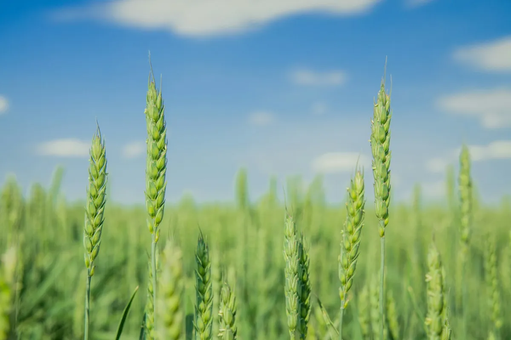

ATULYASH
Order
ATULYASH
Order

ATULYASH
Atta in its purest form

Milled yesterday. At your door today.
Ours is milled slowly on natural stone. Fresh, every week.


Day 1Milledon natural stone, in small batches
NightPackedwith minimal handling
Day 2Deliveredto your door, next morning
We deliver with our own riders.

The 2 kg packFreshly milled, delivered weekly
ATULYASHMP Sharbati
Fresh, every week.Delhi NCR
We question everything. Why not atta?
We keep changing everything around us. Our skincare, our cooking oil, even our utensils, because we research what is best for our family. So why don't we stop and think about our atta? Its quality, where it comes from, how it is made. We just take their word for it.
Isse kisi ne poocha?
The Atulyash way
MP SharbatiSingle-origin. Never blended with other varieties.

Natural stone chakkisNo emery stone, no steel rollers.

Chokar kept inNothing removed, nothing added.
Milled the day beforeIn small batches, delivered the next morning.